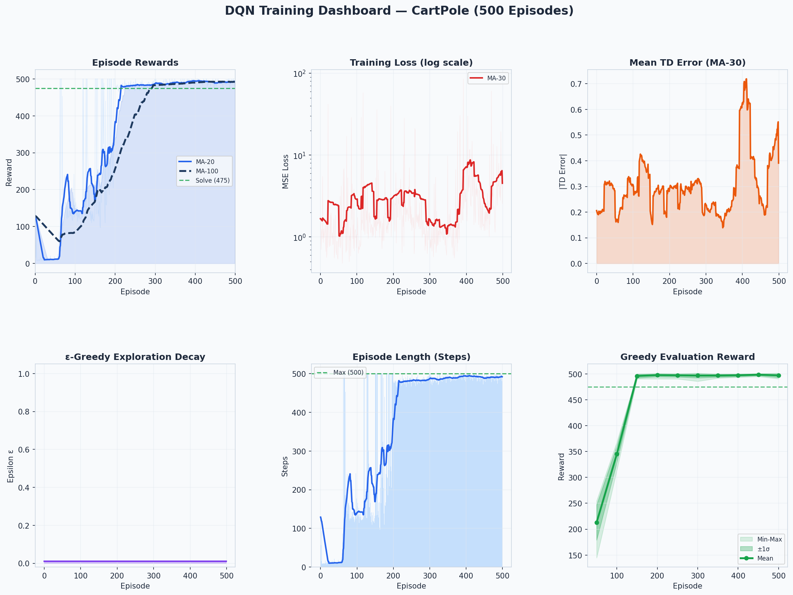
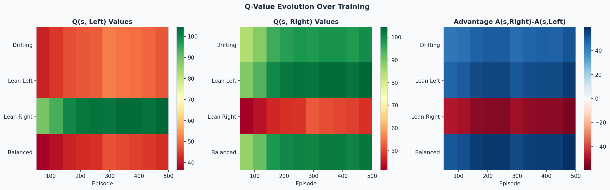
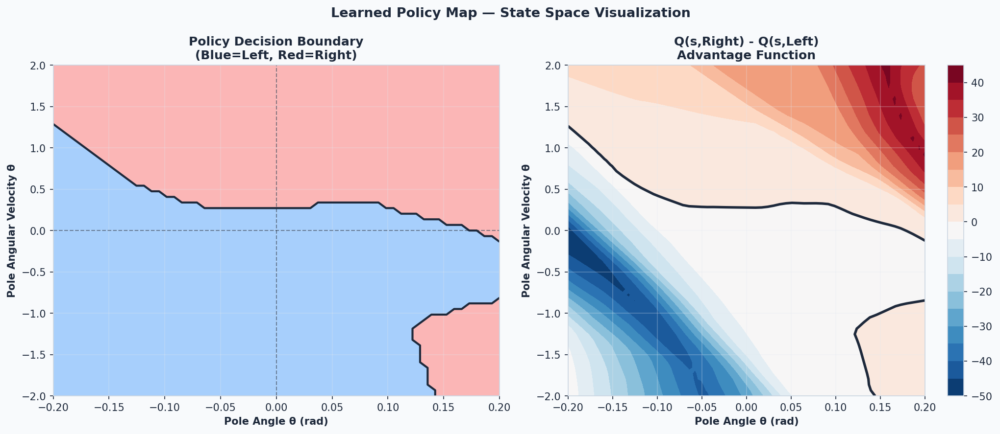
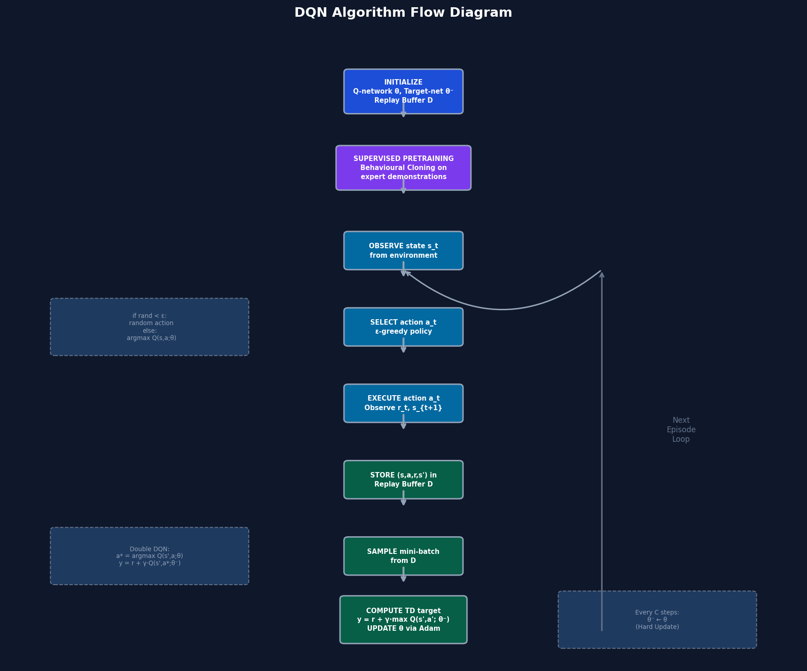

Environment Motion (Wikipedia/Wikimedia)
Cart-pole swing-up animation used as a conceptual visual for the control objective.

NumPy-only RL pipeline with training, evaluation, analysis, and publication artifacts.
Cart-pole swing-up animation used as a conceptual visual for the control objective.
State transitions and rewards framing the RL formulation.

| Metric | Value |
|---|---|
| Training Episodes | 120 |
| Best Eval Mean | 201.9 |
| Eval Mean +- Std | 210.1 +- 30.6 |
| Model Files | best + final uploaded |




This page is stored directly in the repo as index.html. Charts, notebooks, scripts, and model checkpoints are linked from the project tree for immediate viewer access.
Tip: enable GitHub Pages in repository settings with source branch main and folder /root to publish this page live.